2023 Higher Biology - Paper 2 questions
Source: Scottish Qualifications Authority (SQA) / Qualifications Scotland. This is a StemInteract HTML companion, not an official HTML edition. Selectable text is supplied alongside original page images. Use the images or original PDF for equations, powers, fractions, vector notation, tables and diagrams; text extraction cannot fully preserve mathematical layout.
Jump to a question
PDF page 1
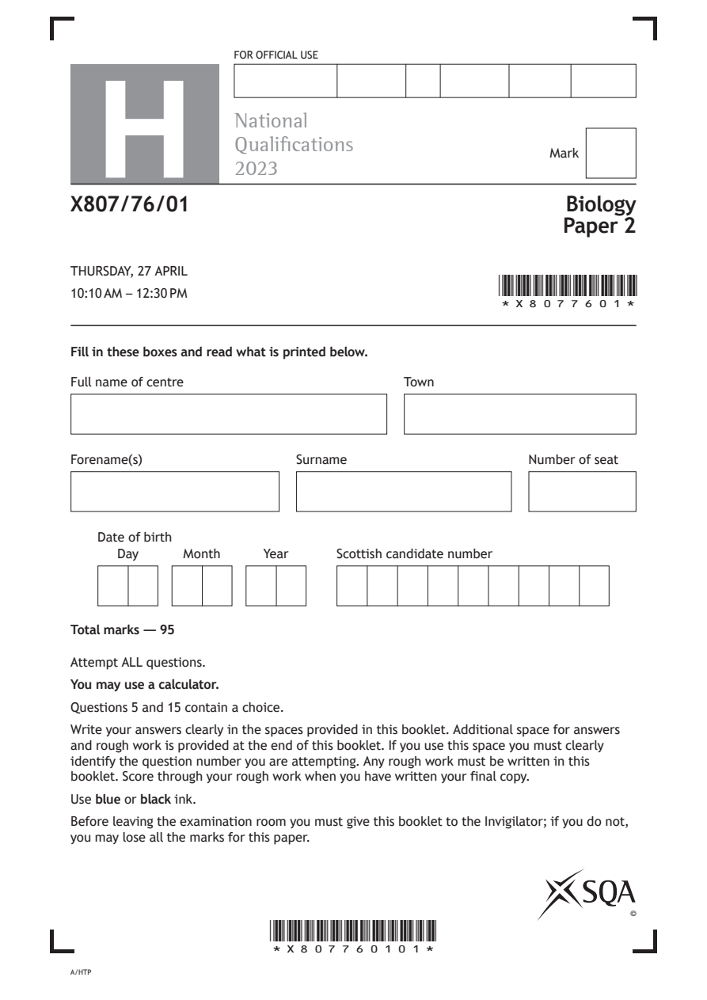
Selectable page text
FOR OFFICIAL USE
H
National
Qualications
Mark
2023
X807/76/01 Biology
Paper 2
THURSDAY, 27 APRIL
10:10 AM – 12:30 PM
*X8077601*
Fill in these boxes and read what is printed below.
Full name of centre Town
Forename(s) Surname Number of seat
Date of birth
Day Month Year Scottish candidate number
Total marks — 95
Attempt ALL questions.
You may use a calculator.
Questions 5 and 15 contain a choice.
Write your answers clearly in the spaces provided in this booklet. Additional space for answers
and rough work is provided at the end of this booklet. If you use this space you must clearly
identify the question number you are attempting. Any rough work must be written in this
booklet. Score through your rough work when you have written your final copy.
Use blue or black ink.
Before leaving the examination room you must give this booklet to the Invigilator; if you do not,
you may lose all the marks for this paper.
©
*X807760101*
A/HTPPDF page 2
Paper 2, Question 1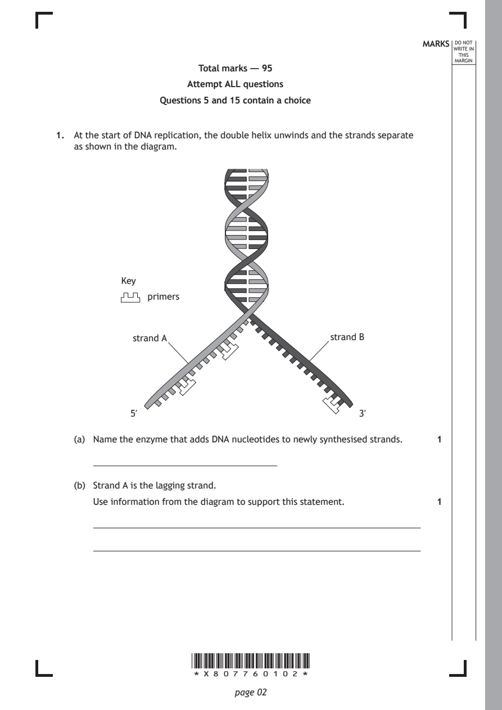
Selectable page text
MARKS _{W}^{D}_{R}^{O}_{I} _{T}^{N}OT
E IN
THIS
MARGIN
Total marks — 95
Attempt ALL questions
Questions 5 and 15 contain a choice
1. At the start of DNA replication, the double helix unwinds and the strands separate
as shown in the diagram.
Key
primers
strand A strand B
5′ 3′
(a) Name the enzyme that adds DNA nucleotides to newly synthesised strands. 1
(b) Strand A is the lagging strand.
Use information from the diagram to support this statement. 1
*X807760102*
page 02PDF page 3
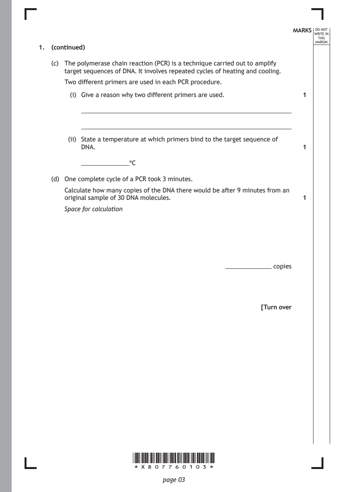
Selectable page text
MARKS _{W}^{D}_{R}^{O}_{I} _{T}^{N}OT
E IN
THIS
MARGIN
1. (continued)
(c) The polymerase chain reaction (PCR) is a technique carried out to amplify
target sequences of DNA. It involves repeated cycles of heating and cooling.
Two different primers are used in each PCR procedure.
(i) Give a reason why two different primers are used. 1
(ii) State a temperature at which primers bind to the target sequence of
DNA. 1
°C
(d) One complete cycle of a PCR took 3 minutes.
Calculate how many copies of the DNA there would be after 9 minutes from an
original sample of 30 DNA molecules. 1
Space for calculation
copies
[Turn over
*X807760103*
page 03PDF page 4
Paper 2, Question 2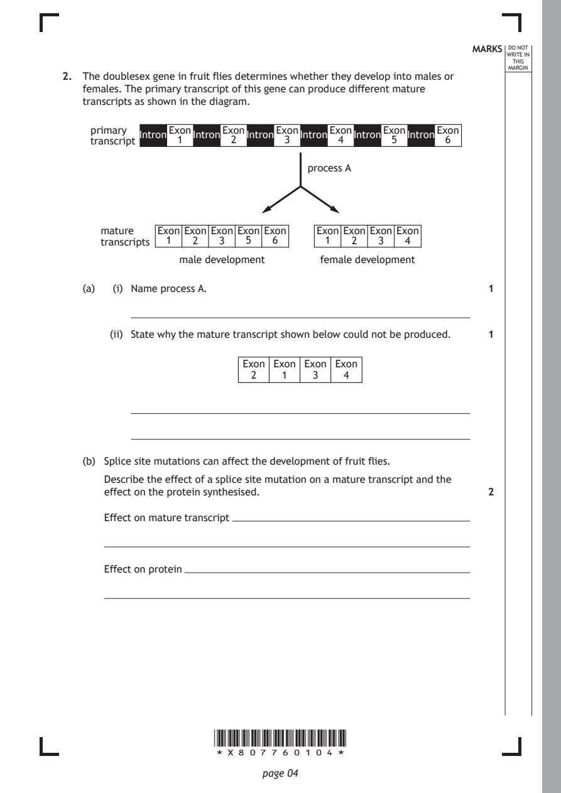
Selectable page text
MARKS _{W}^{D}_{R}^{O}_{I} _{T}^{N}OT
E IN
THIS
MARGIN
2. The doublesex gene in fruit flies determines whether they develop into males or
females. The primary transcript of this gene can produce different mature
transcripts as shown in the diagram.
primary Exon Exon Exon Exon Exon Exon
Intron Intron Intron Intron Intron Intron
transcript 1 2 3 4 5 6
process A
mature Exon Exon Exon Exon Exon Exon Exon Exon Exon
transcripts 1 2 3 5 6 1 2 3 4
male development female development
(a) (i) Name process A. 1
(ii) State why the mature transcript shown below could not be produced. 1
Exon Exon Exon Exon
2 1 3 4
(b) Splice site mutations can affect the development of fruit flies.
Describe the effect of a splice site mutation on a mature transcript and the
effect on the protein synthesised. 2
Effect on mature transcript
Effect on protein
*X807760104*
page 04PDF page 5
Paper 2, Question 3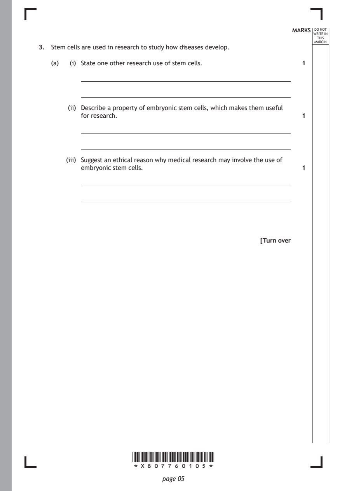
Selectable page text
MARKS _{W}^{D}_{R}^{O}_{I} _{T}^{N}OT
E IN
THIS
MARGIN
3. Stem cells are used in research to study how diseases develop.
(a) (i) State one other research use of stem cells. 1
(ii) Describe a property of embryonic stem cells, which makes them useful
for research. 1
(iii) Suggest an ethical reason why medical research may involve the use of
embryonic stem cells. 1
[Turn over
*X807760105*
page 05PDF page 6
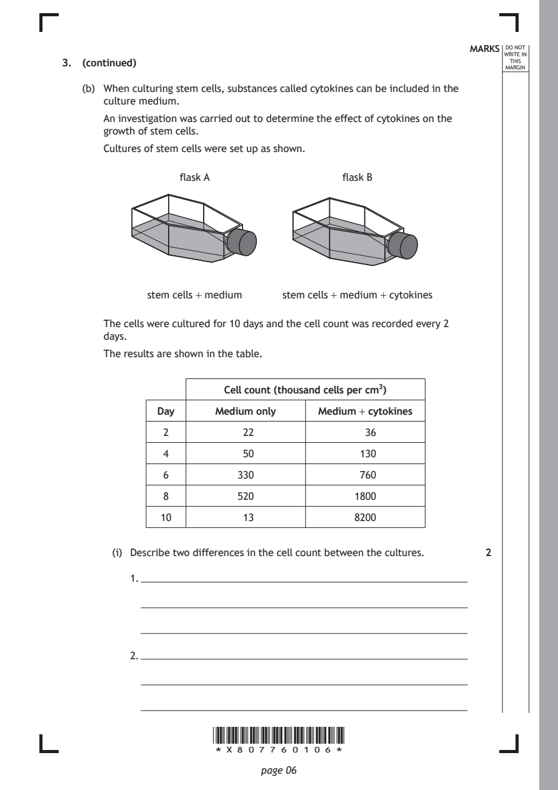
Selectable page text
MARKS _{W}^{D}_{R}^{O}_{I} _{T}^{N}OT
E IN
3. (continued) THIS
MARGIN
(b) When culturing stem cells, substances called cytokines can be included in the
culture medium.
An investigation was carried out to determine the effect of cytokines on the
growth of stem cells.
Cultures of stem cells were set up as shown.
flask A flask B
stem cells + medium stem cells + medium + cytokines
The cells were cultured for 10 days and the cell count was recorded every 2
days.
The results are shown in the table.
Cell count (thousand cells per cm³)
Day Medium only Medium + cytokines
2 22 36
4 50 130
6 330 760
8 520 1800
10 13 8200
(i) Describe two differences in the cell count between the cultures. 2
1.
2.
*X807760106*
page 06PDF page 7
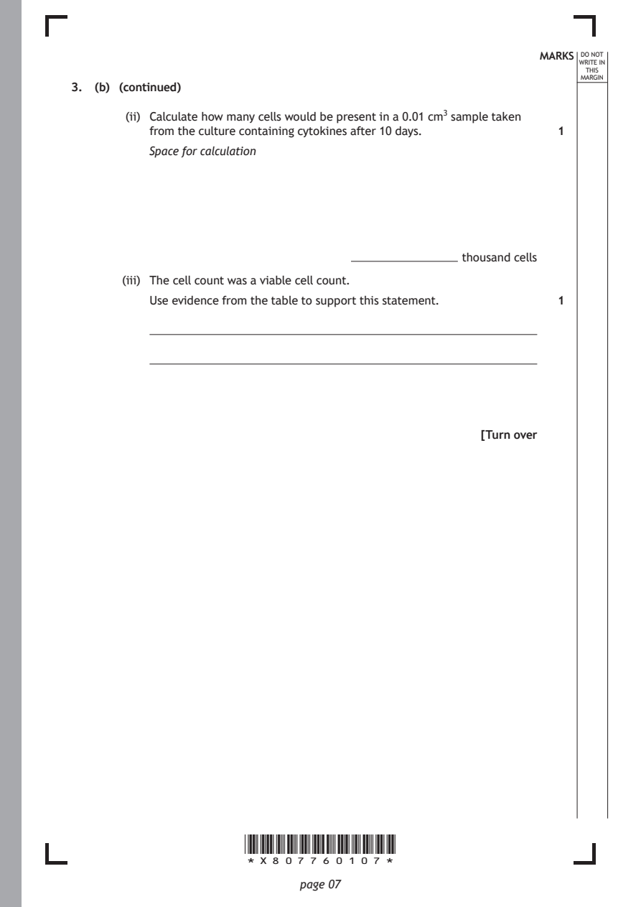
Selectable page text
MARKS _{W}^{D}_{R}^{O}_{I} _{T}^{N}OT
E IN
THIS
MARGIN
3. (b) (continued)
(ii) Calculate how many cells would be present in a 0.01 cm³ sample taken
from the culture containing cytokines after 10 days. 1
Space for calculation
thousand cells
(iii) The cell count was a viable cell count.
Use evidence from the table to support this statement. 1
[Turn over
*X807760107*
page 07PDF page 8
Paper 2, Question 4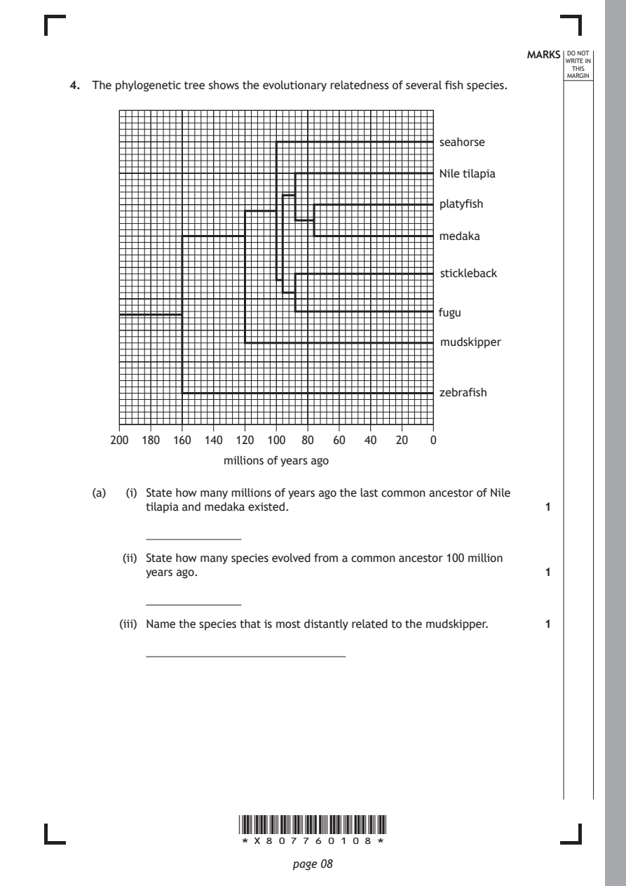
Selectable page text
MARKS _{W}^{D}_{R}^{O}_{I} _{T}^{N}OT
E IN
THIS
MARGIN
4. The phylogenetic tree shows the evolutionary relatedness of several fish species.
seahorse
Nile tilapia
platyfish
medaka
stickleback
fugu
mudskipper
zebrafish
200 180 160 140 120 100 80 60 40 20 0
millions of years ago
(a) (i) State how many millions of years ago the last common ancestor of Nile
tilapia and medaka existed. 1
(ii) State how many species evolved from a common ancestor 100 million
years ago. 1
(iii) Name the species that is most distantly related to the mudskipper. 1
*X807760108*
page 08PDF page 9
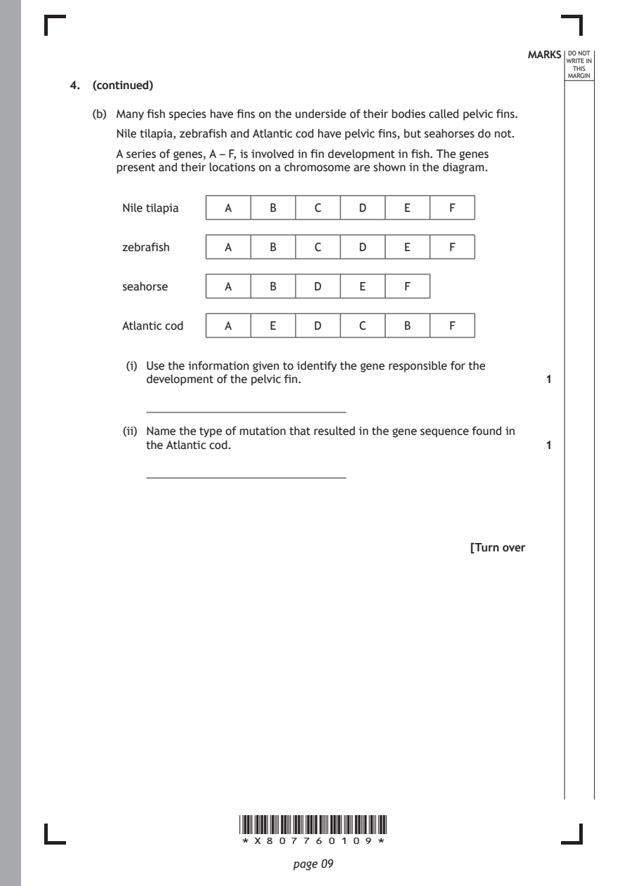
Selectable page text
MARKS _{W}^{D}_{R}^{O}_{I} _{T}^{N}OT
E IN
THIS
MARGIN
4. (continued)
(b) Many fish species have fins on the underside of their bodies called pelvic fins.
Nile tilapia, zebrafish and Atlantic cod have pelvic fins, but seahorses do not.
A series of genes, A – F, is involved in fin development in fish. The genes
present and their locations on a chromosome are shown in the diagram.
Nile tilapia A B C D E F
zebrafish A B C D E F
seahorse A B D E F
Atlantic cod A E D C B F
(i) Use the information given to identify the gene responsible for the
development of the pelvic fin. 1
(ii) Name the type of mutation that resulted in the gene sequence found in
the Atlantic cod. 1
[Turn over
*X807760109*
page 09PDF page 10
Paper 2, Question 5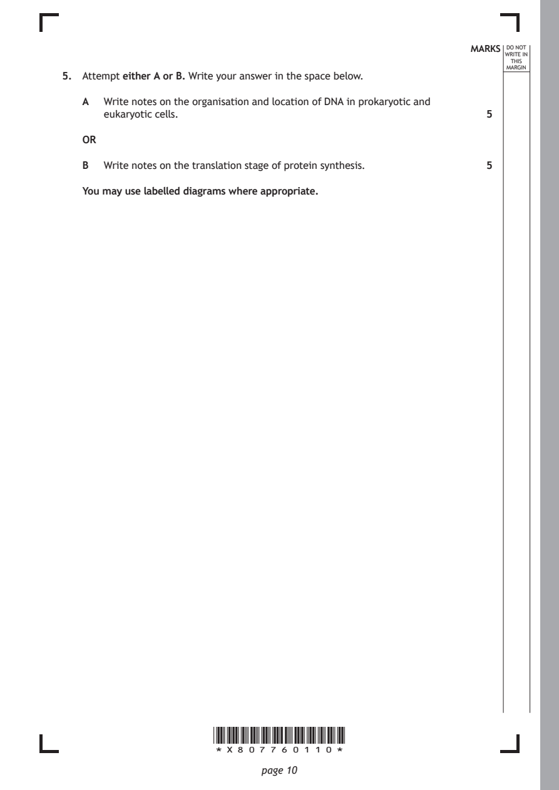
Selectable page text
MARKS _{W}^{D}_{R}^{O}_{I} _{T}^{N}OT
E IN
THIS
MARGIN
5. Attempt either A or B. Write your answer in the space below.
A Write notes on the organisation and location of DNA in prokaryotic and
eukaryotic cells. 5
OR
B Write notes on the translation stage of protein synthesis. 5
You may use labelled diagrams where appropriate.
*X807760110*
page 10PDF page 11
Paper 2, Question 6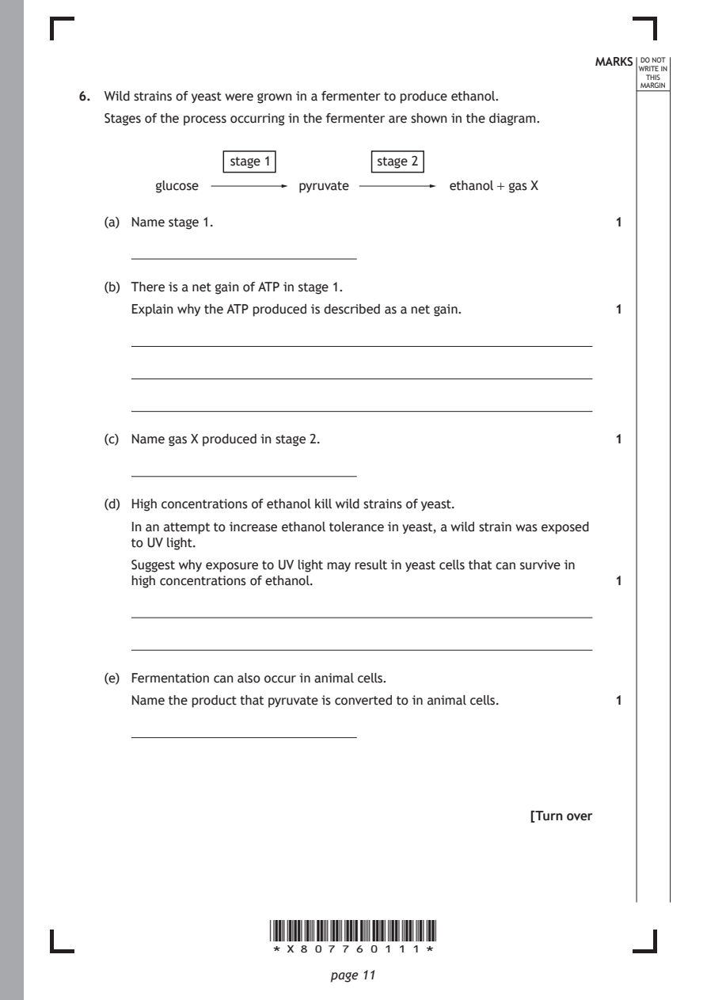
Selectable page text
MARKS _{W}^{D}_{R}^{O}_{I} _{T}^{N}OT
E IN
THIS
MARGIN
6. Wild strains of yeast were grown in a fermenter to produce ethanol.
Stages of the process occurring in the fermenter are shown in the diagram.
stage 1 stage 2
glucose pyruvate ethanol + gas X
(a) Name stage 1. 1
(b) There is a net gain of ATP in stage 1.
Explain why the ATP produced is described as a net gain. 1
(c) Name gas X produced in stage 2. 1
(d) High concentrations of ethanol kill wild strains of yeast.
In an attempt to increase ethanol tolerance in yeast, a wild strain was exposed
to UV light.
Suggest why exposure to UV light may result in yeast cells that can survive in
high concentrations of ethanol. 1
(e) Fermentation can also occur in animal cells.
Name the product that pyruvate is converted to in animal cells. 1
[Turn over
*X807760111*
page 11PDF page 12
Paper 2, Question 7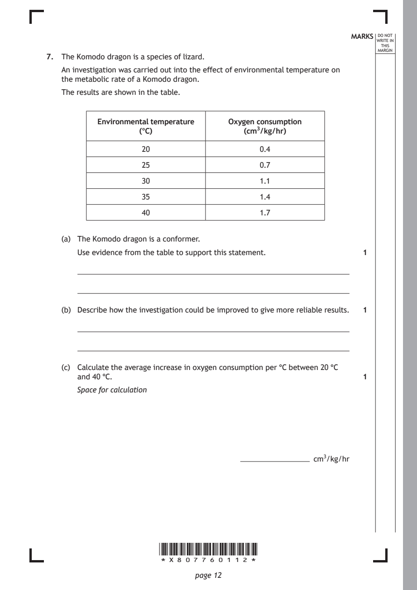
Selectable page text
MARKS _{W}^{D}_{R}^{O}_{I} _{T}^{N}OT
E IN
THIS
MARGIN
7. The Komodo dragon is a species of lizard.
An investigation was carried out into the effect of environmental temperature on
the metabolic rate of a Komodo dragon.
The results are shown in the table.
Environmental temperature Oxygen consumption
(°C) (cm³/kg/hr)
20 0.4
25 0.7
30 1.1
35 1.4
40 1.7
(a) The Komodo dragon is a conformer.
Use evidence from the table to support this statement. 1
(b) Describe how the investigation could be improved to give more reliable results. 1
(c) Calculate the average increase in oxygen consumption per °C between 20 °C
and 40 °C. 1
Space for calculation
cm³/kg/hr
*X807760112*
page 12PDF page 13
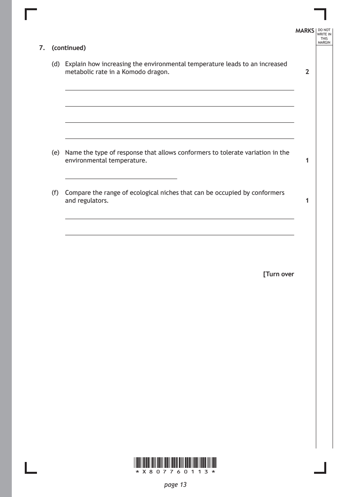
Selectable page text
MARKS _{W}^{D}_{R}^{O}_{I} _{T}^{N}OT
E IN
THIS
MARGIN
7. (continued)
(d) Explain how increasing the environmental temperature leads to an increased
metabolic rate in a Komodo dragon. 2
(e) Name the type of response that allows conformers to tolerate variation in the
environmental temperature. 1
(f) Compare the range of ecological niches that can be occupied by conformers
and regulators. 1
[Turn over
*X807760113*
page 13PDF page 14
Paper 2, Question 8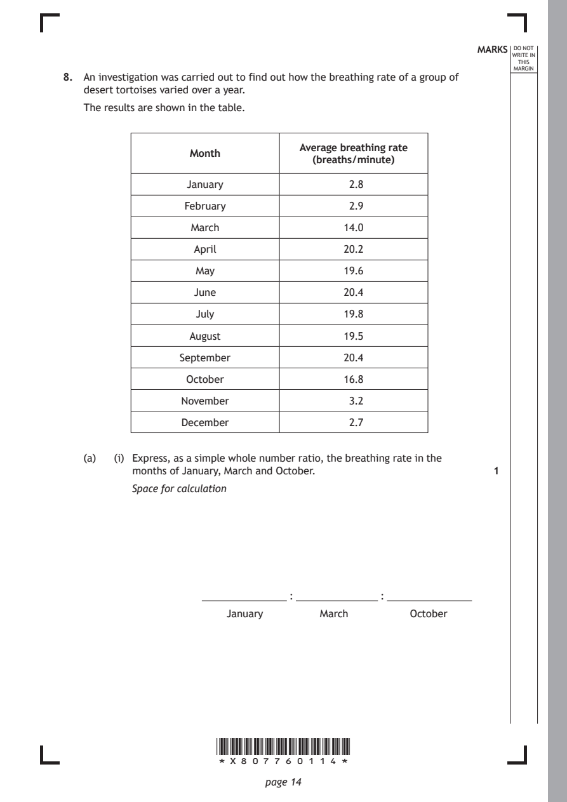
Selectable page text
MARKS _{W}^{D}_{R}^{O}_{I} _{T}^{N}OT
E IN
THIS
MARGIN
8. An investigation was carried out to find out how the breathing rate of a group of
desert tortoises varied over a year.
The results are shown in the table.
Average breathing rate
Month
(breaths/minute)
January 2.8
February 2.9
March 14.0
April 20.2
May 19.6
June 20.4
July 19.8
August 19.5
September 20.4
October 16.8
November 3.2
December 2.7
(a) (i) Express, as a simple whole number ratio, the breathing rate in the
months of January, March and October. 1
Space for calculation
: :
January March October
*X807760114*
page 14PDF page 15
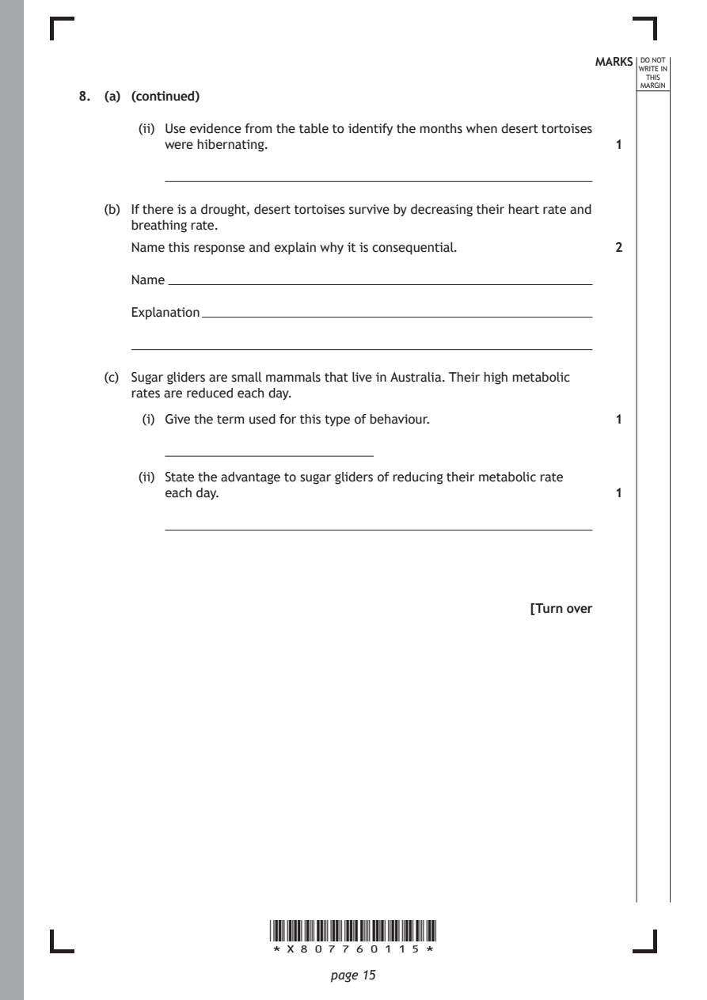
Selectable page text
MARKS _{W}^{D}_{R}^{O}_{I} _{T}^{N}OT
E IN
THIS
MARGIN
8. (a) (continued)
(ii) Use evidence from the table to identify the months when desert tortoises
were hibernating. 1
(b) If there is a drought, desert tortoises survive by decreasing their heart rate and
breathing rate.
Name this response and explain why it is consequential. 2
Name
Explanation
(c) Sugar gliders are small mammals that live in Australia. Their high metabolic
rates are reduced each day.
(i) Give the term used for this type of behaviour. 1
(ii) State the advantage to sugar gliders of reducing their metabolic rate
each day. 1
[Turn over
*X807760115*
page 15PDF page 16
Paper 2, Question 9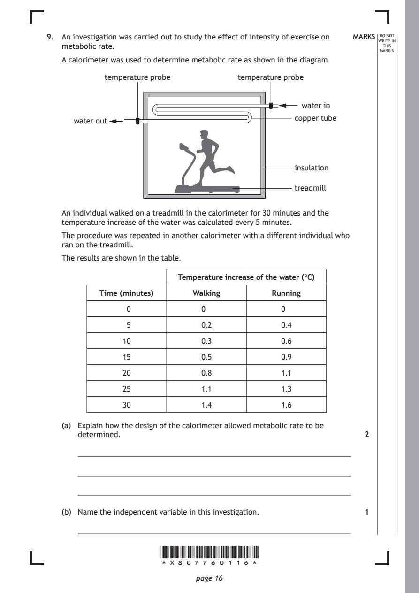
Selectable page text
9. An investigation was carried out to study the effect of intensity of exercise on MARKS _{W}^{D}_{R}^{O}_{I} _{T}^{N}OT
E IN
metabolic rate. THIS
MARGIN
A calorimeter was used to determine metabolic rate as shown in the diagram.
temperature probe temperature probe
water in
copper tube
water out
insulation
treadmill
An individual walked on a treadmill in the calorimeter for 30 minutes and the
temperature increase of the water was calculated every 5 minutes.
The procedure was repeated in another calorimeter with a different individual who
ran on the treadmill.
The results are shown in the table.
Temperature increase of the water (°C)
Time (minutes) Walking Running
0 0 0
5 0.2 0.4
10 0.3 0.6
15 0.5 0.9
20 0.8 1.1
25 1.1 1.3
30 1.4 1.6
(a) Explain how the design of the calorimeter allowed metabolic rate to be
determined. 2
(b) Name the independent variable in this investigation. 1
*X807760116*
page 16PDF page 17
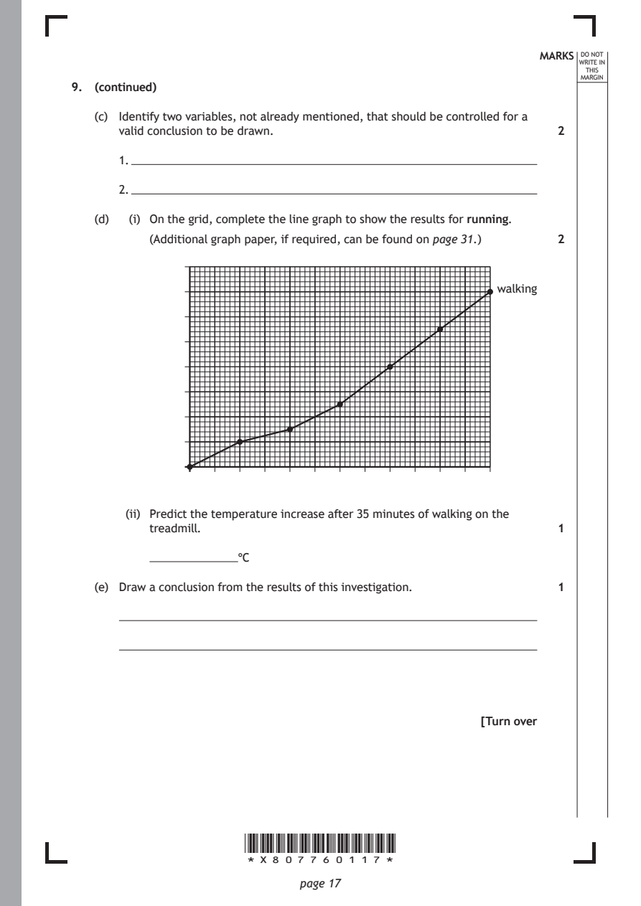
Selectable page text
MARKS _{W}^{D}_{R}^{O}_{I} _{T}^{N}OT
E IN
THIS
MARGIN
9. (continued)
(c) Identify two variables, not already mentioned, that should be controlled for a
valid conclusion to be drawn. 2
1.
2.
(d) (i) On the grid, complete the line graph to show the results for running.
(Additional graph paper, if required, can be found on page 31.) 2
walking
(ii) Predict the temperature increase after 35 minutes of walking on the
treadmill. 1
°C
(e) Draw a conclusion from the results of this investigation. 1
[Turn over
*X807760117*
page 17PDF page 18
Paper 2, Question 10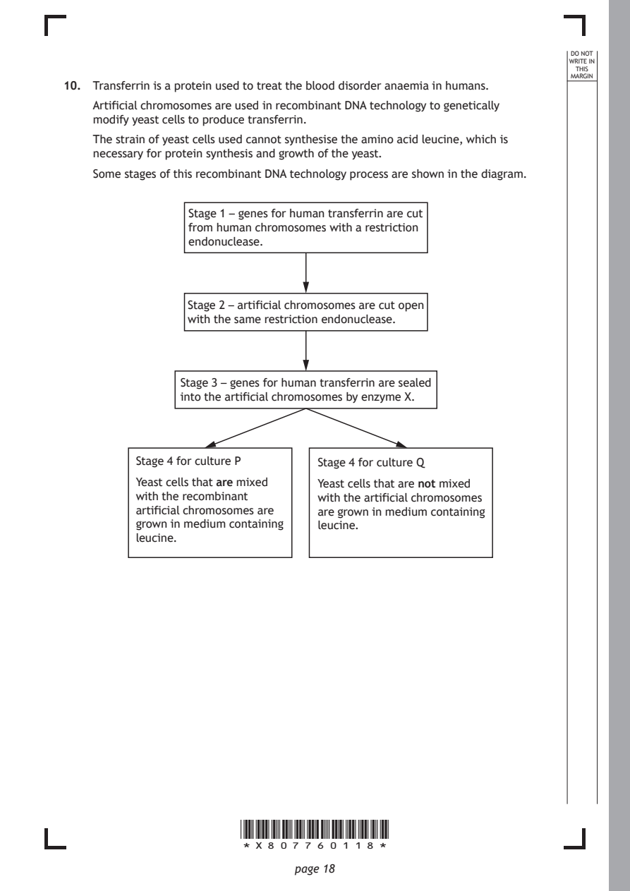
Selectable page text
DO NOT
WRITE IN
THIS
MARGIN
10. Transferrin is a protein used to treat the blood disorder anaemia in humans.
Artificial chromosomes are used in recombinant DNA technology to genetically
modify yeast cells to produce transferrin.
The strain of yeast cells used cannot synthesise the amino acid leucine, which is
necessary for protein synthesis and growth of the yeast.
Some stages of this recombinant DNA technology process are shown in the diagram.
Stage 1 – genes for human transferrin are cut
from human chromosomes with a restriction
endonuclease.
Stage 2 – artificial chromosomes are cut open
with the same restriction endonuclease.
Stage 3 – genes for human transferrin are sealed
into the artificial chromosomes by enzyme X.
Stage 4 for culture P Stage 4 for culture Q
Yeast cells that are mixed Yeast cells that are not mixed
with the recombinant with the artificial chromosomes
artificial chromosomes are are grown in medium containing
grown in medium containing leucine.
leucine.
*X807760118*
page 18PDF page 19
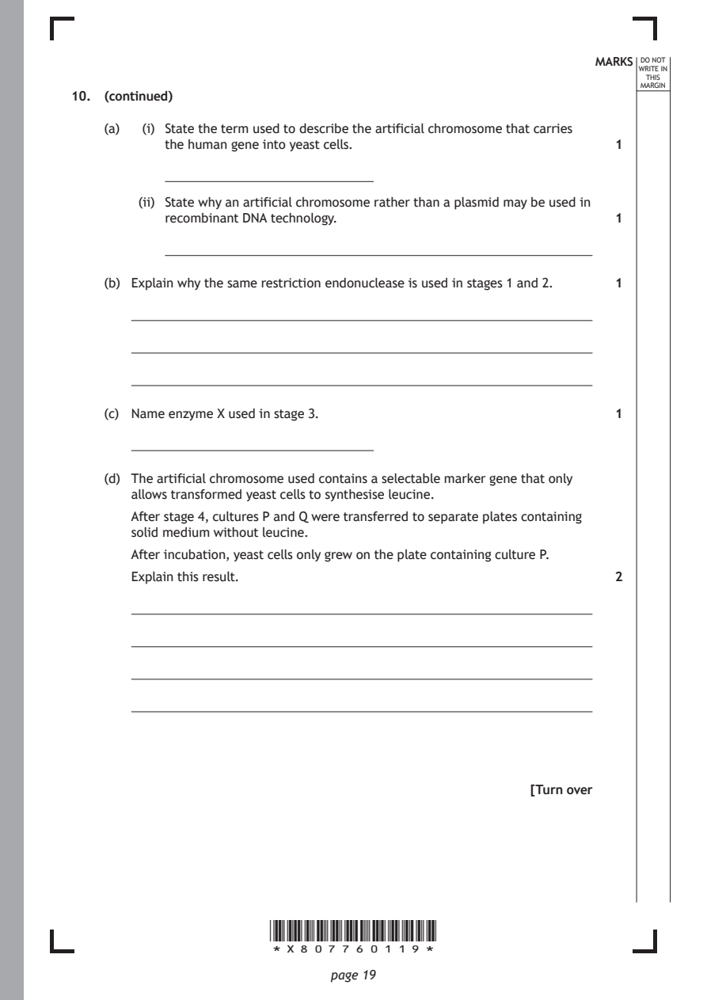
Selectable page text
MARKS _{W}^{D}_{R}^{O}_{I} _{T}^{N}OT
E IN
THIS
MARGIN
10. (continued)
(a) (i) State the term used to describe the artificial chromosome that carries
the human gene into yeast cells. 1
(ii) State why an artificial chromosome rather than a plasmid may be used in
recombinant DNA technology. 1
(b) Explain why the same restriction endonuclease is used in stages 1 and 2. 1
(c) Name enzyme X used in stage 3. 1
(d) The artificial chromosome used contains a selectable marker gene that only
allows transformed yeast cells to synthesise leucine.
After stage 4, cultures P and Q were transferred to separate plates containing
solid medium without leucine.
After incubation, yeast cells only grew on the plate containing culture P.
Explain this result. 2
[Turn over
*X807760119*
page 19PDF page 20
Paper 2, Question 11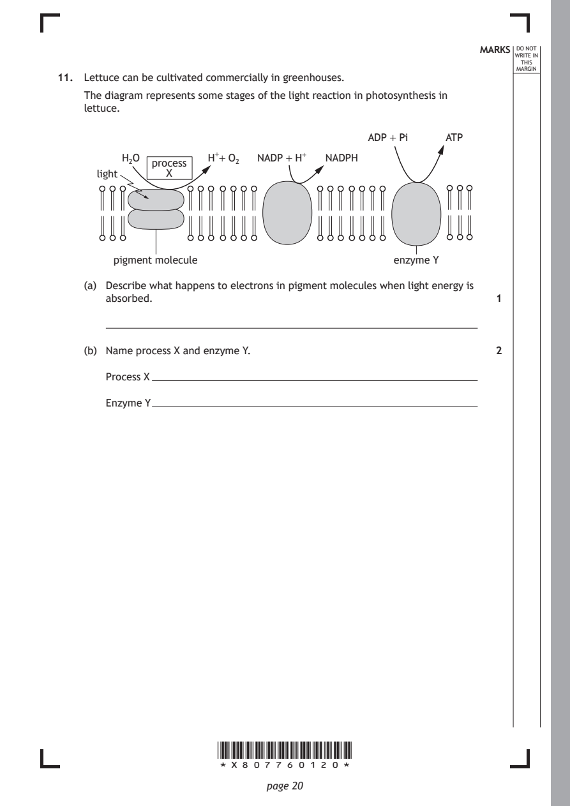
Selectable page text
MARKS _{W}^{D}_{R}^{O}_{I} _{T}^{N}OT
E IN
THIS
MARGIN
11. Lettuce can be cultivated commercially in greenhouses.
The diagram represents some stages of the light reaction in photosynthesis in
lettuce.
ADP + Pi ATP
H₂O H⁺+ O₂ NADP + H⁺ NADPH
process
light X
pigment molecule enzyme Y
(a) Describe what happens to electrons in pigment molecules when light energy is
absorbed. 1
(b) Name process X and enzyme Y. 2
Process X
Enzyme Y
*X807760120*
page 20PDF page 21
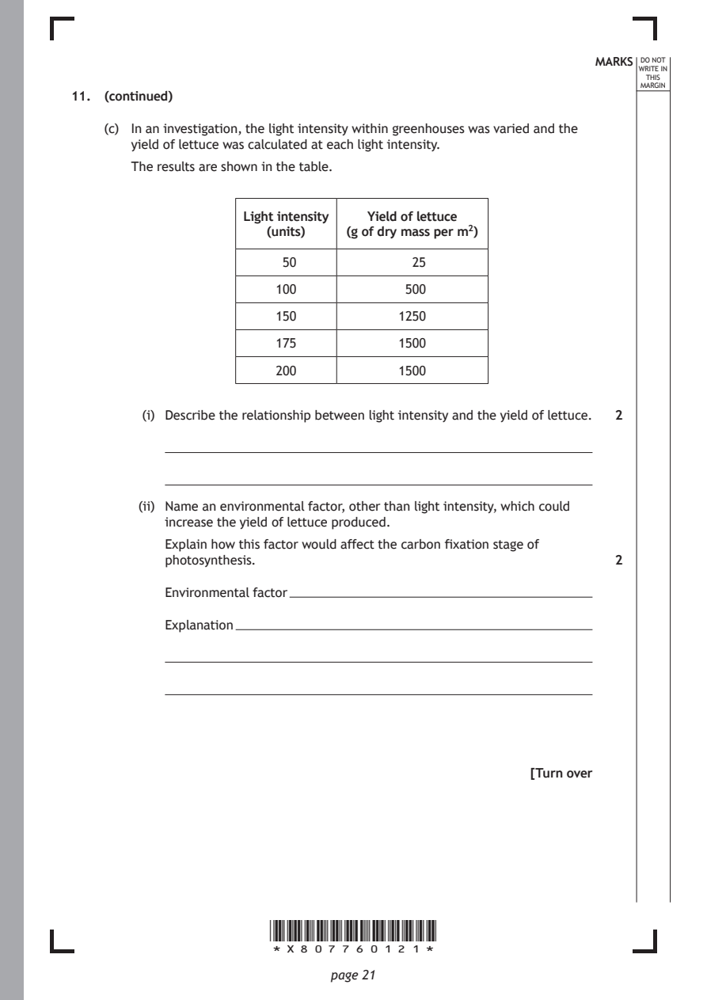
Selectable page text
MARKS _{W}^{D}_{R}^{O}_{I} _{T}^{N}OT
E IN
THIS
MARGIN
11. (continued)
(c) In an investigation, the light intensity within greenhouses was varied and the
yield of lettuce was calculated at each light intensity.
The results are shown in the table.
Light intensity Yield of lettuce
(units) (g of dry mass per m²)
50 25
100 500
150 1250
175 1500
200 1500
(i) Describe the relationship between light intensity and the yield of lettuce. 2
(ii) Name an environmental factor, other than light intensity, which could
increase the yield of lettuce produced.
Explain how this factor would affect the carbon fixation stage of
photosynthesis. 2
Environmental factor
Explanation
[Turn over
*X807760121*
page 21PDF page 22
Paper 2, Question 12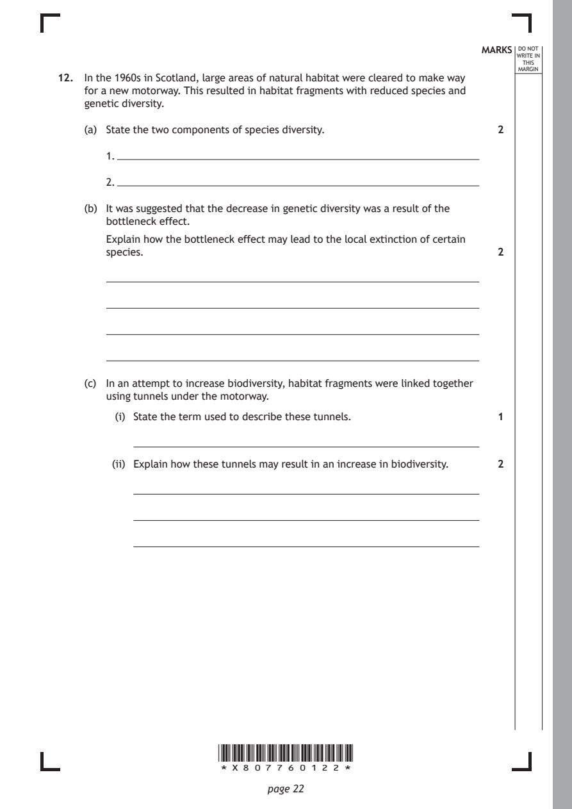
Selectable page text
MARKS _{W}^{D}_{R}^{O}_{I} _{T}^{N}OT
E IN
THIS
MARGIN
12. In the 1960s in Scotland, large areas of natural habitat were cleared to make way
for a new motorway. This resulted in habitat fragments with reduced species and
genetic diversity.
(a) State the two components of species diversity. 2
1.
2.
(b) It was suggested that the decrease in genetic diversity was a result of the
bottleneck effect.
Explain how the bottleneck effect may lead to the local extinction of certain
species. 2
(c) In an attempt to increase biodiversity, habitat fragments were linked together
using tunnels under the motorway.
(i) State the term used to describe these tunnels. 1
(ii) Explain how these tunnels may result in an increase in biodiversity. 2
*X807760122*
page 22PDF page 23
Paper 2, Question 13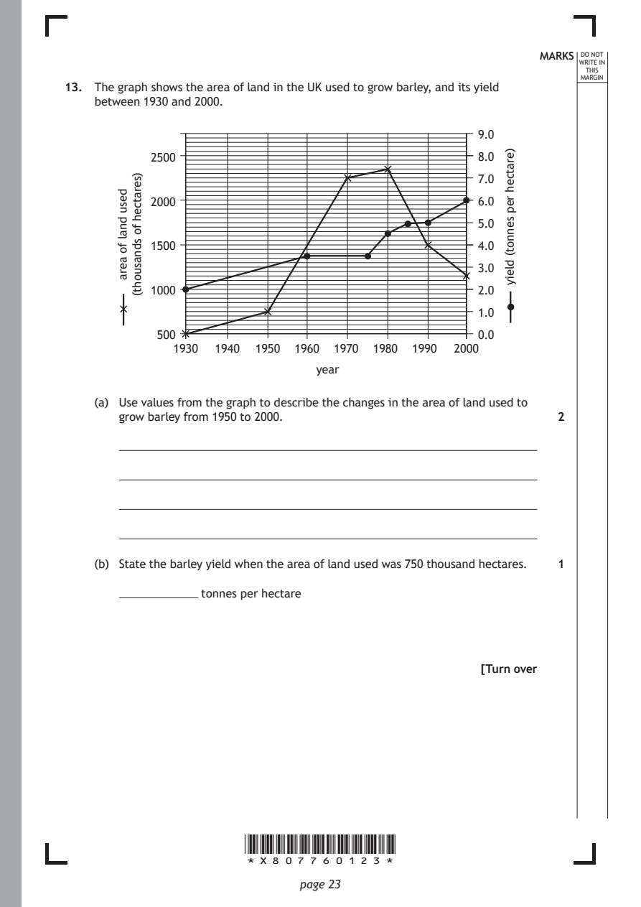
Selectable page text
MARKS _{W}^{D}_{R}^{O}_{I} _{T}^{N}OT
E IN
THIS
MARGIN
13. The graph shows the area of land in the UK used to grow barley, and its yield
between 1930 and 2000.
*X807760123*
page 23
desu
dnal
fo
aera
)seratceh
fo
sdnasuoht(
)eratceh
rep
sennot(
dleiy
9.0
2500 8.0
7.0
2000 6.0
5.0
1500 4.0
3.0
1000 2.0
1.0
500 0.0
1930 1940 1950 1960 1970 1980 1990 2000
year
(a) Use values from the graph to describe the changes in the area of land used to
grow barley from 1950 to 2000. 2
(b) State the barley yield when the area of land used was 750 thousand hectares. 1
tonnes per hectare
[Turn overPDF page 24
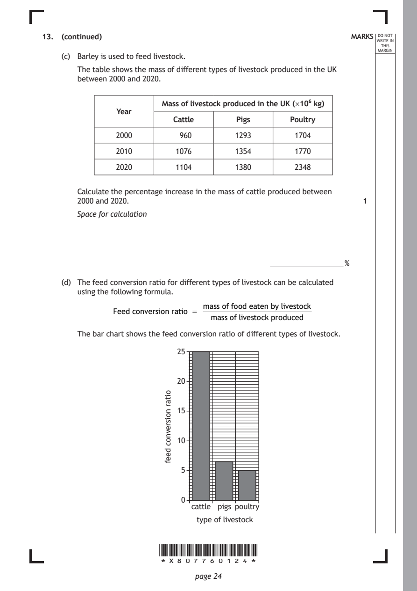
Selectable page text
13. (continued) MARKS _{W}^{D}_{R}^{O}_{I} _{T}^{N}OT
E IN
THIS
MARGIN
(c) Barley is used to feed livestock.
The table shows the mass of different types of livestock produced in the UK
between 2000 and 2020.
Mass of livestock produced in the UK (×10⁶ kg)
Year
Cattle Pigs Poultry
2000 960 1293 1704
2010 1076 1354 1770
2020 1104 1380 2348
Calculate the percentage increase in the mass of cattle produced between
2000 and 2020.
Space for calculation
%
(d) The feed conversion ratio for different types of livestock can be calculated
using the following formula.
mass of food eaten by livestock
Feed conversion ratio =
massof livestock produced
The bar chart shows the feed conversion ratio of different types of livestock.
*X807760124*
page 24
oitar
noisrevnoc
deef
1
25
20
15
10
5
0
cattle pigs poultry
type of livestockPDF page 25
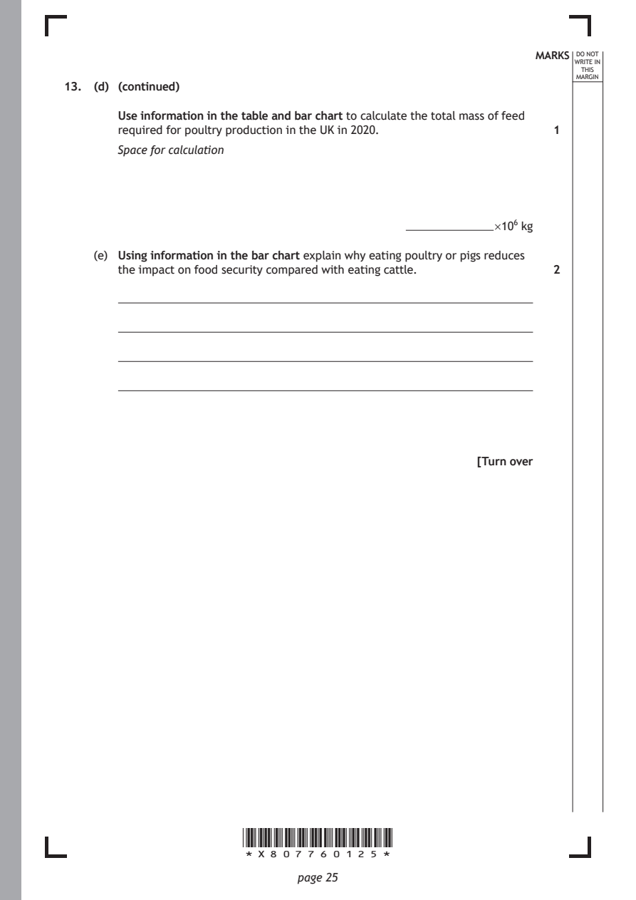
Selectable page text
MARKS _{W}^{D}_{R}^{O}_{I} _{T}^{N}OT
E IN
THIS
MARGIN
13. (d) (continued)
Use information in the table and bar chart to calculate the total mass of feed
required for poultry production in the UK in 2020. 1
Space for calculation
×10⁶ kg
(e) Using information in the bar chart explain why eating poultry or pigs reduces
the impact on food security compared with eating cattle. 2
[Turn over
*X807760125*
page 25PDF page 26
Paper 2, Question 14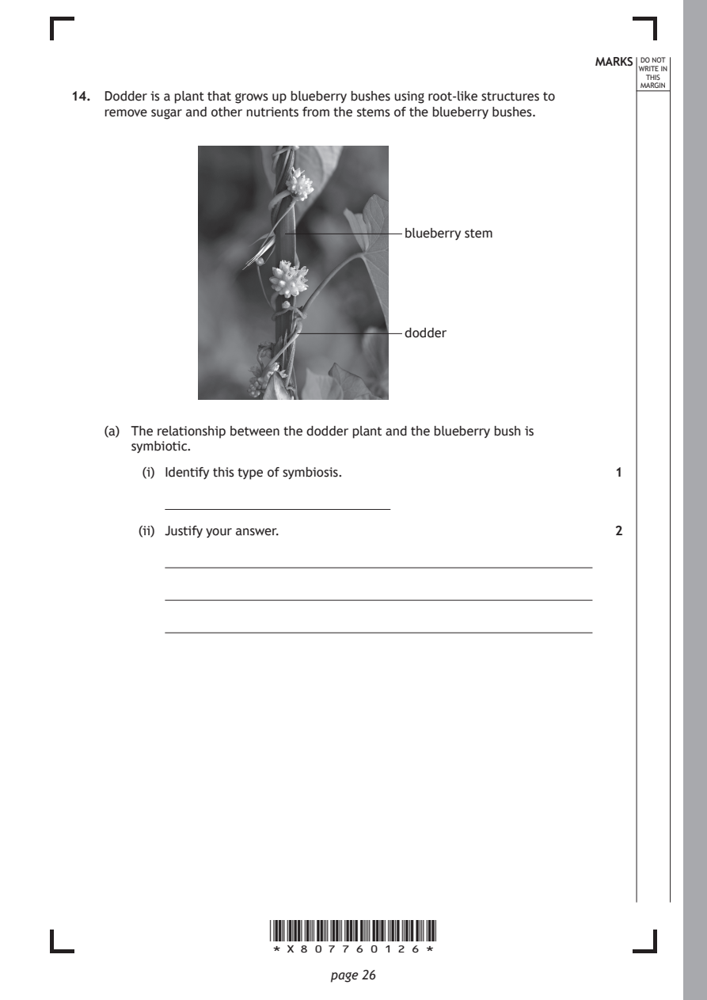
Selectable page text
MARKS _{W}^{D}_{R}^{O}_{I} _{T}^{N}OT
E IN
THIS
MARGIN
14. Dodder is a plant that grows up blueberry bushes using root-like structures to
remove sugar and other nutrients from the stems of the blueberry bushes.
blueberry stem
dodder
(a) The relationship between the dodder plant and the blueberry bush is
symbiotic.
(i) Identify this type of symbiosis. 1
(ii) Justify your answer. 2
*X807760126*
page 26PDF page 27
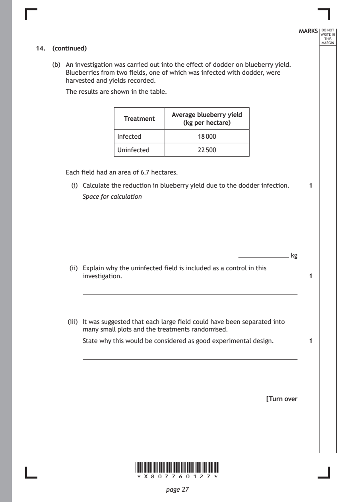
Selectable page text
MARKS _{W}^{D}_{R}^{O}_{I} _{T}^{N}OT
E IN
THIS
MARGIN
14. (continued)
(b) An investigation was carried out into the effect of dodder on blueberry yield.
Blueberries from two fields, one of which was infected with dodder, were
harvested and yields recorded.
The results are shown in the table.
Average blueberry yield
Treatment
(kg per hectare)
Infected 18 000
Uninfected 22 500
Each field had an area of 6.7 hectares.
(i) Calculate the reduction in blueberry yield due to the dodder infection. 1
Space for calculation
kg
(ii) Explain why the uninfected field is included as a control in this
investigation. 1
(iii) It was suggested that each large field could have been separated into
many small plots and the treatments randomised.
State why this would be considered as good experimental design. 1
[Turn over
*X807760127*
page 27PDF page 28
Paper 2, Question 15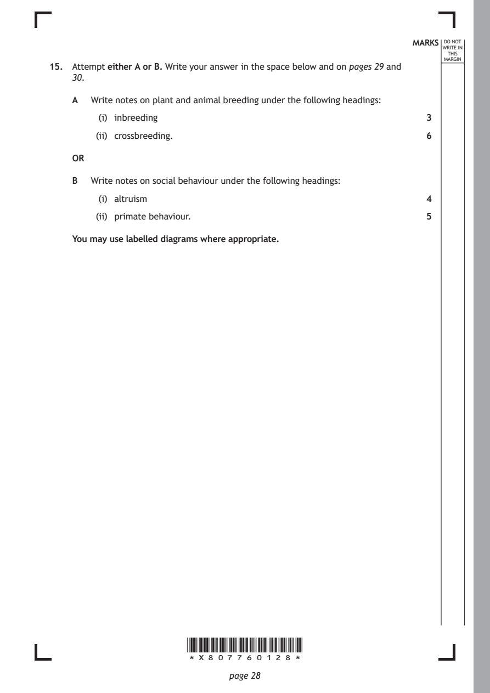
Selectable page text
MARKS _{W}^{D}_{R}^{O}_{I} _{T}^{N}OT
E IN
THIS
MARGIN
15. Attempt either A or B. Write your answer in the space below and on pages 29 and
30.
A Write notes on plant and animal breeding under the following headings:
(i) inbreeding 3
(ii) crossbreeding. 6
OR
B Write notes on social behaviour under the following headings:
(i) altruism 4
(ii) primate behaviour. 5
You may use labelled diagrams where appropriate.
*X807760128*
page 28PDF page 29
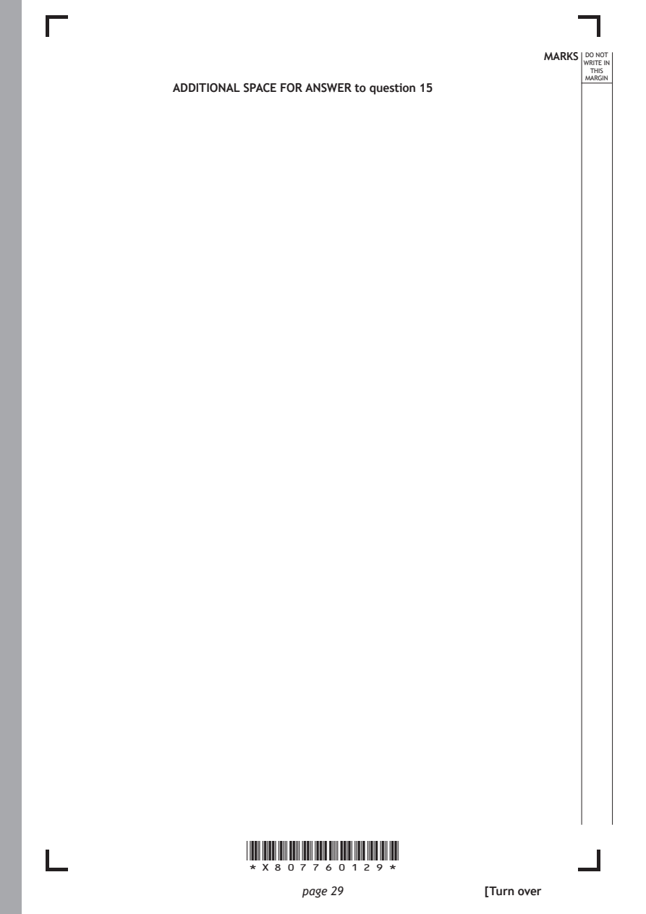
Selectable page text
MARKS _{W}^{D}_{R}^{O}_{I} _{T}^{N}OT
E IN
THIS
MARGIN
ADDITIONAL SPACE FOR ANSWER to question 15
*X807760129*
page 29 [Turn overPDF page 30
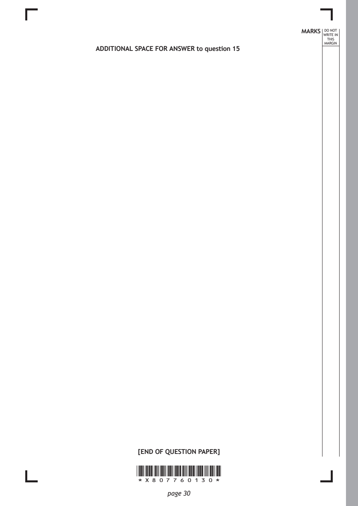
Selectable page text
MARKS _{W}^{D}_{R}^{O}_{I} _{T}^{N}OT
E IN
THIS
MARGIN
ADDITIONAL SPACE FOR ANSWER to question 15
[END OF QUESTION PAPER]
*X807760130*
page 30PDF page 31
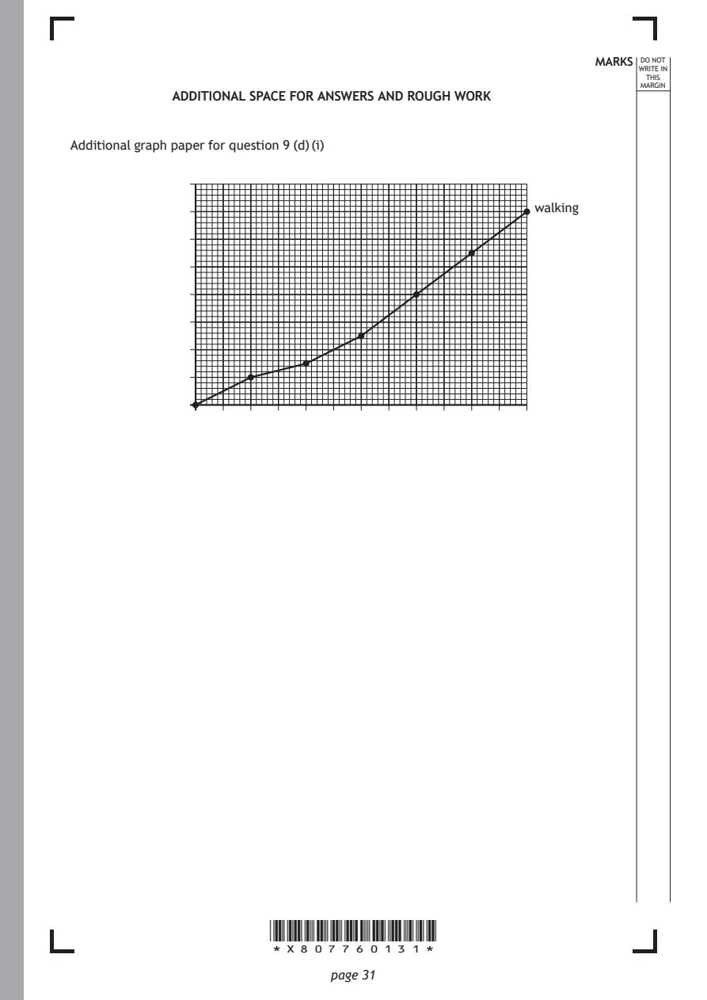
Selectable page text
MARKS _{W}^{D}_{R}^{O}_{I} _{T}^{N}OT
E IN
THIS
MARGIN
ADDITIONAL SPACE FOR ANSWERS AND ROUGH WORK
Additional graph paper for question 9 (d) (i)
walking
*X807760131*
page 31PDF page 32
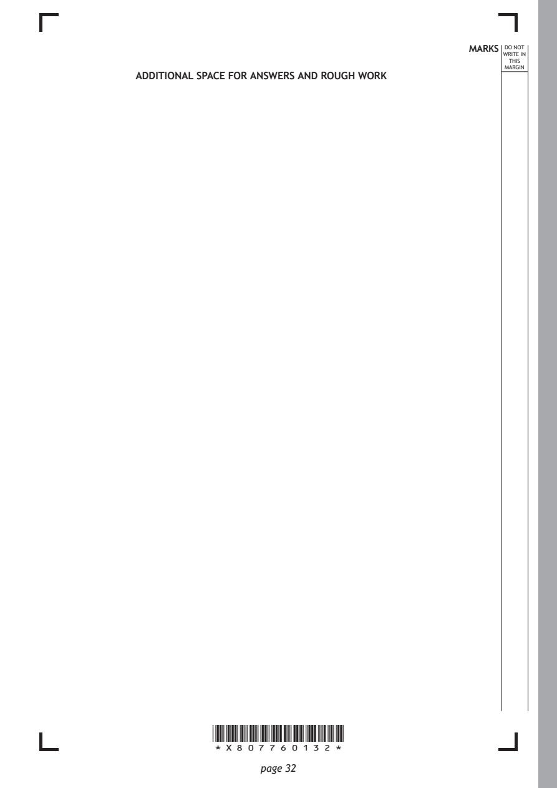
Selectable page text
MARKS _{W}^{D}_{R}^{O}_{I} _{T}^{N}OT
E IN
THIS
MARGIN
ADDITIONAL SPACE FOR ANSWERS AND ROUGH WORK
*X807760132*
page 32PDF page 33

Selectable page text
MARKS _{W}^{D}_{R}^{O}_{I} _{T}^{N}OT
E IN
THIS
MARGIN
ADDITIONAL SPACE FOR ANSWERS AND ROUGH WORK
*X807760133*
page 33PDF page 34
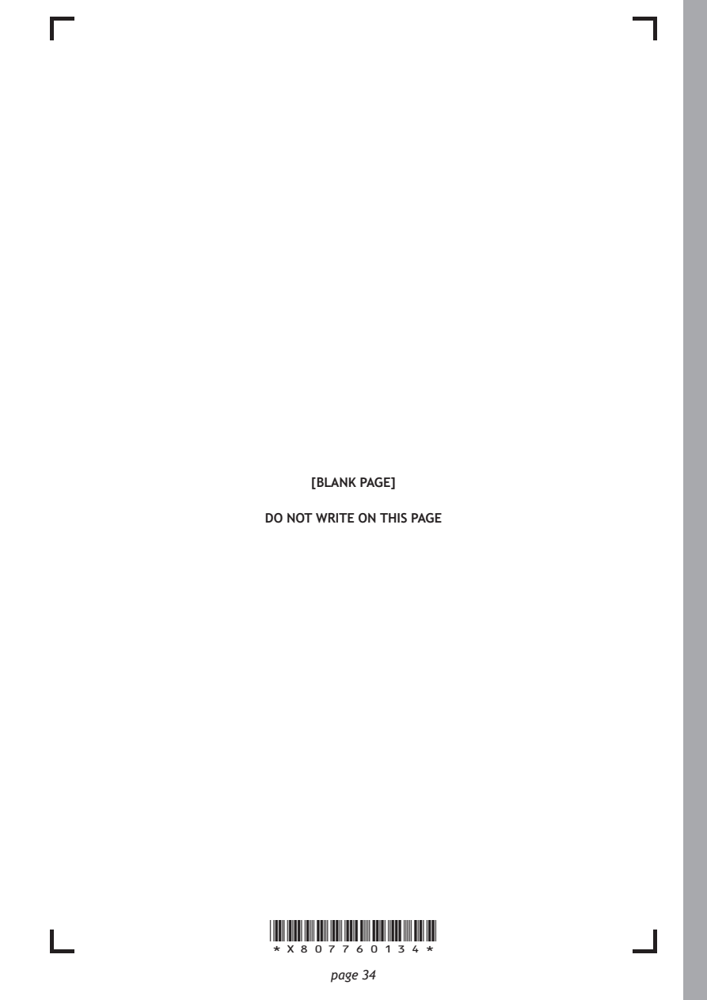
Selectable page text
[BLANK PAGE]
DO NOT WRITE ON THIS PAGE
*X807760134*
page 34PDF page 35

Selectable page text
[BLANK PAGE]
DO NOT WRITE ON THIS PAGE
*X807760135*
page 35PDF page 36
Selectable page text
[BLANK PAGE]
DO NOT WRITE ON THIS PAGE
Acknowledgement of copyright
Question 14 Eifel-Details/shutterstock.com
*X807760136*
page 36